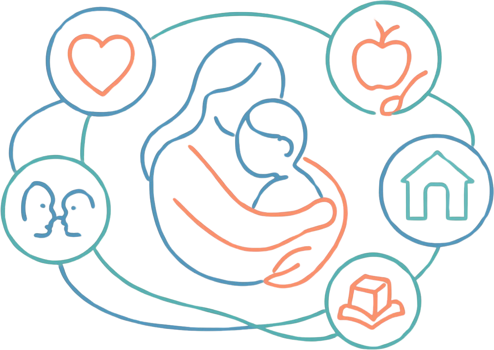

<!doctype html>
<html lang="pt-BR">
<head>
<meta charset="utf-8" />
<title>Capa do Dashboard - Observatorio da Primeira Infancia</title>
<meta name="viewport" content="width=device-width, initial-scale=1" />
<link rel="preconnect" href="https://fonts.googleapis.com" />
<link rel="preconnect" href="https://fonts.gstatic.com" crossorigin />
<link href="https://fonts.googleapis.com/css2?family=Montserrat:wght@400;500;600;700;800&family=Montserrat+Alternates:wght@500;700;800&display=swap" rel="stylesheet" />
<style>
  html, body { margin: 0; padding: 0; min-height: 100vh; background: #0b1d3f; font-family: 'Montserrat', system-ui, sans-serif; }
  * { box-sizing: border-box; }

  /* Stage que escala 1280x720 para caber em qualquer viewport */
  .stage {
    width: 100vw;
    height: 100vh;
    display: flex;
    align-items: center;
    justify-content: center;
    overflow: hidden;
  }
  .scaled {
    width: 1280px;
    height: 720px;
    flex-shrink: 0;
    min-width: 1280px;
    transform-origin: center center;
    box-shadow: 0 30px 80px rgba(0,0,0,0.45);
    border-radius: 6px;
    overflow: hidden;
  }
</style>

<script src="https://unpkg.com/react@18.3.1/umd/react.development.js" integrity="sha384-hD6/rw4ppMLGNu3tX5cjIb+uRZ7UkRJ6BPkLpg4hAu/6onKUg4lLsHAs9EBPT82L" crossorigin="anonymous"></script>
<script src="https://unpkg.com/react-dom@18.3.1/umd/react-dom.development.js" integrity="sha384-u6aeetuaXnQ38mYT8rp6sbXaQe3NL9t+IBXmnYxwkUI2Hw4bsp2Wvmx4yRQF1uAm" crossorigin="anonymous"></script>
<script src="https://unpkg.com/@babel/standalone@7.29.0/babel.min.js" integrity="sha384-m08KidiNqLdpJqLq95G/LEi8Qvjl/xUYll3QILypMoQ65QorJ9Lvtp2RXYGBFj1y" crossorigin="anonymous"></script>
</head>
<body>
<div class="stage">
  <div class="scaled" id="root"></div>
</div>

<script type="text/babel">
/* global React */

// Cores oficiais do site
const C = {
  bluePrimary: '#5282C2',
  blueDeep:    '#4147D5',
  blueText:    '#2260B8',
  blueUI:      '#034EA2',
  blueLight:   '#D7E0FF',
  coral:       '#EF817D',
  coralBg:     '#F9F2F2',
  green:       '#ADCC6B',
  white:       '#FFFFFF',
  gray100:     '#F5F5F5',
  gray200:     '#E8E8E8',
  gray500:     '#808080',
  gray700:     '#4C4C4F',
  textDark:    '#313131',
};

const FONT = '"Montserrat", "Montserrat Alternates", system-ui, sans-serif';
const NAV_ITEMS = [
  { label: 'Panorama', active: true },
  { label: 'Sa\u00fade' },
  { label: 'Educa\u00e7\u00e3o' },
  { label: 'Assistencia Social' },
  { label: 'Prote\u00e7\u00e3o e Seguran\u00e7a' },
];

// CAPA — abordagem editorial em fundo claro, com o símbolo do logo como elemento gráfico
function Capa() {
  return (
    <div
      style={{
        width: 1280,
        height: 720,
        position: 'relative',
        overflow: 'hidden',
        fontFamily: FONT,
        background: C.white,
        color: C.textDark,
        display: 'flex',
      }}
    >
      {/* ===== COLUNA ESQUERDA — fundo branco com texto ===== */}
      <div
        style={{
          flex: 1.2,
          position: 'relative',
          padding: '50px 60px',
          display: 'flex',
          flexDirection: 'column',
          justifyContent: 'space-between',
          background: C.white,
        }}
      >
        {/* Logo Pacto — limpo, transparente */}
        <div>
          
        </div>

        {/* Bloco principal de texto */}
        <div style={{ marginTop: 10 }}>
          {/* tag pequena coral */}
          <div
            style={{
              fontSize: 11,
              fontWeight: 700,
              letterSpacing: 3,
              color: C.coral,
              marginBottom: 18,
              textTransform: 'uppercase',
            }}
          >
            {'Observat\u00f3rio da Primeira Inf\u00e2ncia'}
          </div>

          <h1
            style={{
              fontFamily: FONT,
              fontSize: 68,
              lineHeight: 1.0,
              fontWeight: 800,
              letterSpacing: -1.8,
              margin: 0,
              color: C.blueDeep,
              textWrap: 'balance',
            }}
          >
            Pacto pelas
            <br />
            {'Crian\u00e7as'}
            <br />
            <span style={{ color: C.coral }}>{'do Piau\u00ed'}</span>
          </h1>

          {/* divisor coral */}
          <div
            style={{
              width: 80,
              height: 4,
              background: C.coral,
              borderRadius: 4,
              marginTop: 28,
              marginBottom: 22,
            }}
          />

          <p
            style={{
              fontSize: 17,
              lineHeight: 1.55,
              maxWidth: 460,
              margin: 0,
              fontWeight: 500,
              color: C.gray700,
            }}
          >
            {'Painel de acompanhamento para leitura integrada dos indicadores'}
            <br />
            {'da primeira inf\u00e2ncia no territ\u00f3rio piauiense.'}
          </p>
          <div style={{ marginTop: 20, maxWidth: 560 }}>
            <div
              style={{
                fontSize: 10.5,
                fontWeight: 700,
                letterSpacing: 1.8,
                textTransform: 'uppercase',
                color: C.bluePrimary,
                marginBottom: 10,
              }}
            >
              {'Explore os pain\u00e9is'}
            </div>

            <div
              style={{
                display: 'flex',
                flexWrap: 'wrap',
                gap: 8,
              }}
            >
              {NAV_ITEMS.map((item) => (
                <div
                  key={item.label}
                  style={{
                    display: 'inline-flex',
                    alignItems: 'center',
                    gap: 6,
                    borderRadius: 999,
                    padding: item.active ? '7px 12px' : '7px 11px',
                    border: item.active ? `1px solid ${C.blueDeep}` : `1px solid ${C.gray200}`,
                    background: item.active ? C.blueDeep : C.white,
                    color: item.active ? C.white : C.bluePrimary,
                    fontSize: 11.5,
                    fontWeight: 700,
                    lineHeight: 1,
                    whiteSpace: 'nowrap',
                  }}
                >
                  <span>{item.label}</span>
                </div>
              ))}
            </div>

          </div>
        </div>

        {/* Footer da coluna — assinatura institucional */}
        <div
          style={{
            display: 'flex',
            alignItems: 'center',
            gap: 14,
            paddingTop: 18,
            borderTop: `1px solid ${C.gray200}`,
          }}
        >
          

          {/* tagline pequena à direita */}
          <div
            style={{
              marginLeft: 'auto',
              fontSize: 11,
              fontWeight: 600,
              color: C.coral,
              fontStyle: 'italic',
            }}
          >
            {'Primeira inf\u00e2ncia \u00e9 para a vida toda.'}
          </div>
        </div>
      </div>

      {/* ===== COLUNA DIREITA — areia quente + ilustração do abraço ===== */}
      <div
        style={{
          flex: 1,
          position: 'relative',
          background: 'linear-gradient(160deg, #FBF1E6 0%, #F4DFC8 100%)',
          overflow: 'hidden',
          color: '#3A2E26',
        }}
      >
        {/* Ilustração principal — abraço em linha contínua + 5 mundos */}
        
        {/* SVG legacy oculto — a ilustração agora é a imagem importada */}
        {/* Coluna direita = apenas ilustração */}

        {/* Faixa colorida estreita no rodapé */}
        <div
          style={{
            position: 'absolute',
            bottom: 0,
            left: 0,
            right: 0,
            display: 'flex',
            height: 8,
            zIndex: 6,
          }}
        >
          <div style={{ flex: 1, background: C.coral }} />
          <div style={{ flex: 1, background: '#F4A94E' }} />
          <div style={{ flex: 1, background: C.green }} />
          <div style={{ flex: 1, background: C.bluePrimary }} />
        </div>
      </div>

      {/* ===== Linha decorativa vertical no encontro das colunas ===== */}
      <div
        style={{
          position: 'absolute',
          left: '54.55%', // alinhar com a divisão flex 1.2 / 1
          top: 0,
          bottom: 0,
          width: 1,
          background: 'rgba(0,0,0,0.05)',
          zIndex: 3,
          pointerEvents: 'none',
        }}
      />
    </div>
  );
}

Object.assign(window, { Capa, BRAND_COLORS: C });


</script>

<script type="text/babel">
  ReactDOM.createRoot(document.getElementById('root')).render(<Capa />);

  // Auto-scale do palco 1280x720 para o viewport
  function fit() {
    const stage = document.querySelector('.stage');
    const scaled = document.querySelector('.scaled');
    const sw = stage.clientWidth, sh = stage.clientHeight;
    const scale = Math.min(sw / 1280, sh / 720);
    scaled.style.transform = `scale(${scale})`;
  }
  window.addEventListener('resize', fit);
  setTimeout(fit, 50);
</script>
</body>
</html>


